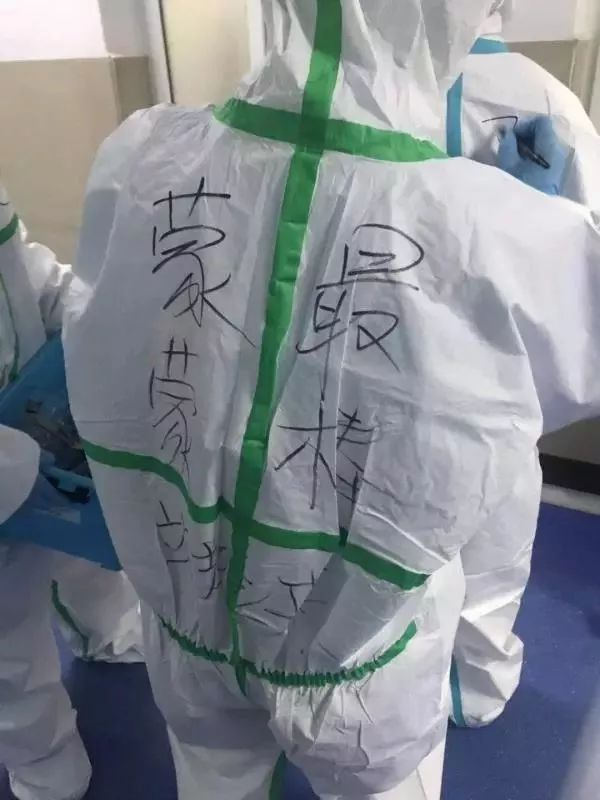
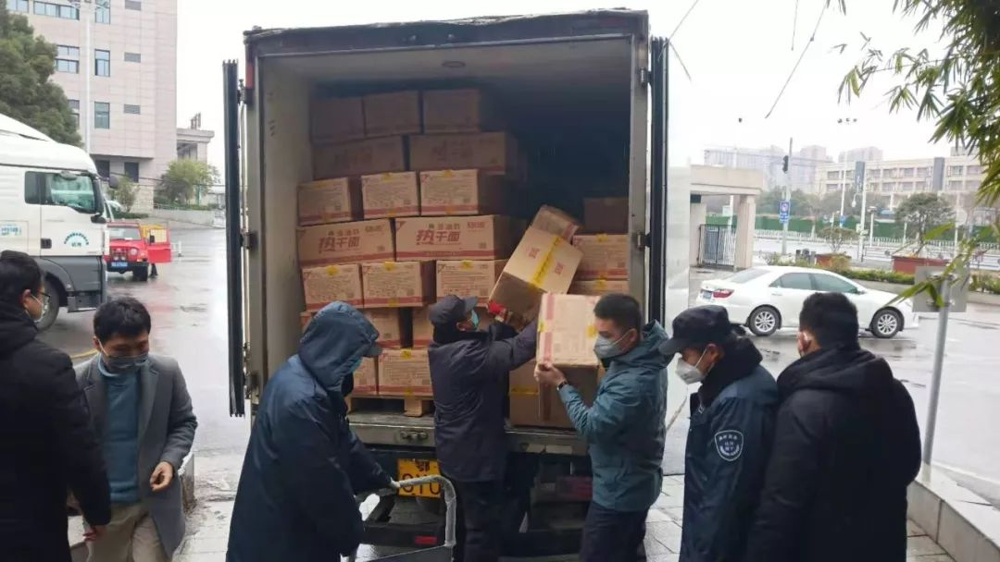

武汉一线医护人员现在缺什么
原文链接 备份链接 武汉第一批七家定点医院医用物资也存在短缺 防疫物资今日抵达汉口，明日有望缓解 本文首发于南方人物周刊 文 | 本刊记者 徐梅 赵蕾 张宇欣 编辑 | 周建平 蒯乐昊 全文约3479字，细读大约需要9分钟 有的市属一 …
采写/胡琪琛
编辑/刘汨

隔离病房贴上了福字 | 长江日报
22岁的黎平安是武汉一家三级医院的医生，在市内公共交通停止运行后，大年三十那天，他走了一个多小时去医院上班。
在黎平安工作的医院，同样面临着物资匮乏的情况，一套本该一人使用的防护设备，被分给了几名医护人员共同使用，护士长不断提醒，“省着点，春节后可能就不够了”。
黎平安也很担心父亲，父亲是一家区级医院的呼吸科主任，一天接诊了100多名病人，唯一的防护是一层口罩。
以下是黎平安的自述。

大年三十，去支援发热门诊
高考填志愿，我想学医。可没想到我父亲，一个区级中心医院的呼吸科主任，是最坚决反对的那个人。
要知道，我可是在医院里长大的。我父亲是医生，我母亲是医院职工，我就住在医院的家属楼里，从小就是满眼的白大褂。
我觉得这工作特别神圣，但我爸认为医生太辛苦、医患关系也不好，最后折中，我学了检验专业，毕业后也分到了医院的检验科。
今年1月中旬，我接到通知，说发热门诊人手不够，急需检验科支援，要求全科人员在武汉待命，24小时手机开机，一旦有需要，立刻赶往科室。
我们科室一位医生写了一封178个字的请战书，“要求领导给我额外排班，要求不计报酬，克服家庭一切困难，投入到这次抗击病毒的战斗中“。之后，这封信在我的朋友圈里疯转。
1月18日，根据大家的意愿、时间、能力，医院迅速出了一份排班表。我的班，正好被排在了大年三十这天。
看到消息，我给父亲打了个电话，告诉他今年过年回不来了。我俩上次通话还是在小年夜那天，他们科室聚餐，他酒喝多了，一直问我，春节排班出来了吗，什么时候回家。
疫情出现以后，父亲已经在一线门诊工作了好几天。电话里，他语言挺平静的，只是反复强调要注意防护，我也提醒他，一定要保护好自己。

医生在防护服背后写上自己的名字
检测科也确诊不了新型肺炎
1月24日，大年三十早上6点多，因为武汉的公共交通已经停止，我也没车，花了1个小时10分钟，从家走到了医院。
7点半到科室时，一位年龄较大的前辈还没有结束夜班，但见我来了，问我“怎么来的？”
我如实作答，他笑着给我比了一个大拇指。
我在发热门诊，主要负责为一线病人采集检测样本，比如采血、咽试纸、尿液标本等。样本采集完成后会被送到检测室，放到生物安全柜里进行检测。
很多患者乃至医生会给我们打电话，问我们能不能检查出这次新型的冠状病毒。我们只能遗憾地告诉他们，检测科也无法确诊。
我们能做的检测都是常规项目，比如血常规、C反应蛋白、呼吸道五联、病毒全套等等，但做不了冠状病毒核酸检测。
其实试剂盒研制出后，我们科室的主任就联系到了一批。但1月20日，国家卫健委又发布公告，将新型冠状病毒感染的肺炎规定为乙类传染病，并采取甲类传染病的预防、控制措施。甲类传染病的检测必须在三级实验室开展。医院的生物实验室一般都是二级生物实验室，是没有资格开展检测的。
到现在，我也没见过这个试剂盒长什么样。现在医院能做的，就是用排除法，找出“高度疑似”病例。如果患者出现高度类似新型肺炎的症状，检测结果排除了所有常规原因，再结合医生的临床判断，最多只能确认为高度疑似病例。
这些高度疑似病例会交由医院里面一些高层次的专家进行会诊，再由他们共同提出申请，去疾控中心做确诊。
最后的结果，要两级权威的疾控中心确认后，才算是真正确诊。
省下一层防护衣，留给流动护士
和医生、护士相比，我的工作环境算好的。我在自己的房间里，通过一个半开的玻璃窗口接触病人，相当于在一个半密闭的环境内工作。医生、护士不一样，他们需要完全接触患者，危险系数更高，特别是有的护士，还要给病人喂饭、大小解。
我们每天工作的第一件事是穿戴防护设备。在科室穿好白大褂后，前往发热门诊，之后依次洗手，戴N95口罩、头套和第一层橡胶手套。然后用手套包裹住白大褂袖口，扎紧封闭，再用免洗手消毒液进行第一次消毒，为穿防护服做准备。
按理说，我们应在防护服里再穿一层隔离衣。但现在物资匮乏，我们只能把防护服和隔离衣分开使用。直接接触一线的医生就穿安全等级更高的防护服，将隔离衣留给非一线的流动护士。
护士长特意嘱咐，让大家省着用防护装备，说春节期间供应暂时还够，但是春节之后就比较悬了。现在我们小组里面所有人都在联系外省的朋友，甚至国外的朋友，看能不能筹措到一些装备，就供自己组用。
防护服穿戴好之后，再是鞋套，第二次免洗手消毒，第二层塑胶手套，最后是防护面罩。
这套设备一天穿下来，总觉得呼吸困难，又闷又热。而且这防护服都是一次性连体的，脱下来就报废了。一整天下来，我们一口水都不敢喝，一趟厕所也不敢上，生怕浪费了一件防护服。
双层厚橡胶手套也很影响工作。平常我们采血就戴一层手套，病人的血管难找的时候，有时根本不戴手套。但这次我们必须带厚厚的双层手套，影响摸血管的手感。24日我给第一个病人采血，找血管用了足足半分钟，才敢给他下针。
最难受的是防护面罩和口罩。我们呼吸时，热气是往上走的，遇到冷冰冰的防护面罩会凝结成了一层层水雾。因为手不干净，这些水雾又无法进行擦拭，导致我给病人抽血时，需要上下找角度，通过折射去找血管。
一天下来，我的口罩内层全部打湿，水涔涔地往脖子下面灌。每天我做完最后一个检测时，身心都觉得如释重负。特别是防护服脱下来那一刻，感觉整个世界都被打开了。
医院里送来的匿名外卖
不管在进入一线之前有多担心，穿上防护装备的那一刻，你都会迅速进入工作状态，暂时忘却恐惧。
大年三十那天，我从早上8点工作到中午12:30，短暂的午餐后，又继续工作到下午的5点。一天下来，我接触了30个左右病人，临床医生那边得有60多个病人。
前些天我们医院两个院区加起来，一天能接诊四五百人。一位上夜班的同事，看到凌晨4点半的窗外，排着一条人头攒动的长队。来做检查的病人，每位都神色严峻，每个人都怕自己真的感染上了病毒。
我个人的感受是，这个时候医患关系比平时也好了许多。昨天我给一个29岁的男性患者抽血时，我的前针已经扎进去了，正准备加真空管时，双层手套直接把针从血管里带了出来，他的胳膊立刻血流不止，我都惊了，连忙道歉说，不好意思，不好意思。
他比我还客气，一直说不要紧不要紧，你穿那么多衣服，也不好作业，我们都理解，你们现在都辛苦。
我马上给他进行紧急处理，消毒，按压止血。他按了一下流血处就立刻换了另一手，还跟我解释说，刚刚那个手的血管可能没有那么好了，换这个抽。
昨天父亲告诉我，有天早上7点左右，他们医院的急诊科收到了一名爱心人士送来的匿名外卖，里面是一些早茶早点，还附了一张纸条，“希望能让那些忙碌了一宿的白衣天使们，吃上一口热乎乎的早茶”。

一批物资运抵黎平安所在的医院
我把女朋友骂了一顿
我们医院有两个分院，我在两个分院之间租了一个小房。之前我和女朋友两个人住，因为女朋友要回家做伴娘，在武汉关闭交通出口的前两天回了洪湖。现在家里只有我一个人。
除夕晚上回家有些晚，我懒得做饭，打开外卖一看还有店开着，就点了一份黄焖鸡米饭。
外卖到的时候，差不多是八点。春晚本来有个和疫情有关的特别节目，说武汉是在保护全国人民，当时我挺感动。但是越看到后来，越觉得落寞。春晚载歌载舞，但热闹都是别人的，我们这边像是什么都没有。
我有一个很庞大的家族。父亲有四个哥哥和两个姐姐。每年初一，就会全部回到老家，之前爷爷奶奶还在的时候，家里最多是五代同堂。
这事之后，我在深圳的大伯没有回家，二伯跟家家户户说，今年取消拜年了，就在电话里给大家祝福，等这事过去后，再一起聚一个团圆年。
昨天堂哥问我，是不是一个人在武汉，有没有回家。我说，没回家。他说，那你来我家来住。我想都没想马上回绝了。我怕如果自己真的感染了，很可能会传染给他们。
其实，医务工作者都有自我隔离的自觉。我有个同事，很早就把孩子送到爷爷奶奶家。比起思念与牵挂，他们更担心会感染孩子。再比如武汉市民自发建群，说是要送医生上下班，但我们科室没有一个人去联系市民坐车，每个人都害怕无意将病毒感染更多的人。
昨天，我就是因为隔离这件事跟女朋友吵了架。女朋友回老家后，一直不停地给我转发新闻，不停地嘱咐我，家里要通风，要多喝热水，要好好吃饭，要好好照顾自己。
结果晚上睡觉前，她突然跟我说，现在紧急物资匮乏，如果有机会想回武汉做志愿者，同时也陪陪我。我狠狠骂了她一顿。我说了好久这边什么都好，不用担心的狠话，她才同意不回来。
父亲只戴着一层口罩坐诊
除夕夜，我和父亲的电话，仍旧没有超过三分钟。
一下班，我就给他打了电话。他说医院还在开会，马上匆匆挂了电话。父亲所在的是区里最好的医院，辖区有一百万人，平时去看病的人就很多，现在也一定不比市里的医院少。
除夕那天，父亲在呼吸科门诊坐诊，一天看了140多个病人。相对市里的医院，区医院的防护物资更加匮乏。父亲坐诊时是没有防护服的，我一直跟他说要穿，但是每家医院都是一样，在物资匮乏的情况下，优先保障发热门诊的一线医生。
我问他，没有防护服，你们戴护目镜了吗？他说，其实也没有，他就戴着一层薄薄的口罩。
一想到最近有很多新增病例其实并没有发热症状，我愈发担心他。在春晚刚开始前五分钟，我又给母亲打了个电话。母亲告诉我，父亲已经到家了，正准备换衣服洗澡，还没吃饭。。
听到他已经回来，我才心安了些。之后我没再给父亲打电话，只是在微信上彼此嘱咐对方，要保护好自己。
（应采访者要求，文中黎平安为化名）
【反侵权公告】本文系北京青年报在腾讯新闻独家首发，未经授权，不得转载。


抗击新型冠状病毒的基层医院 | 深度报道

我与“新型冠状病毒”搏斗的22天 | 深度报道

照顾发烧丈夫，妻子穿上一次性塑料雨衣 *| 深度报道*


原文链接 备份链接 武汉第一批七家定点医院医用物资也存在短缺 防疫物资今日抵达汉口，明日有望缓解 本文首发于南方人物周刊 文 | 本刊记者 徐梅 赵蕾 张宇欣 编辑 | 周建平 蒯乐昊 全文约3479字，细读大约需要9分钟 有的市属一 …
原文链接 备份链接 按规定，他们每接一次病人，都要全车消毒、销毁防护服，不然可能会成为新的传染源。但现实情况是，他们全站连一套防护服都没了。除夕夜里两点，他没有睡觉，发了这半年里唯一一条不是关于女儿的朋友圈，是一条物资的求助。他告诉《人 …
原文链接 备份链接 武汉急诊科护士被感染 除夕夜独自居家隔离未告诉亲人病情丨武汉肺炎亲历 2020-01-25 22:47 作者：晏国文 曹学平 来源：中国经营网 本报记者 晏国文 曹学平 北京报道 “护士不好当，急诊的护士更不好当，武汉 …
原文链接 备份链接 希望情况尽快能得到改善 武汉医院现在防护服短缺，一线医护人员不敢吃饭、喝水、上厕所，因为医用防护服是一次性的，一旦脱下就要换新的。 本刊记者/周群峰 摄 近日来，网上有关于武汉市医务人员被感染的消息出现。武汉市某三甲医 …
原文链接 备份链接 3月21日。 封城第59天。这么长时间了！ 昨天那么大的太阳，今天突然就阴了。下午还下了点雨。这时节的春雨，对于院子里的树以及花，都还是很需要的。前两三天，武大樱花盛开，树下空荡无人，估计是记者拍了一些照片，同学群里便 …